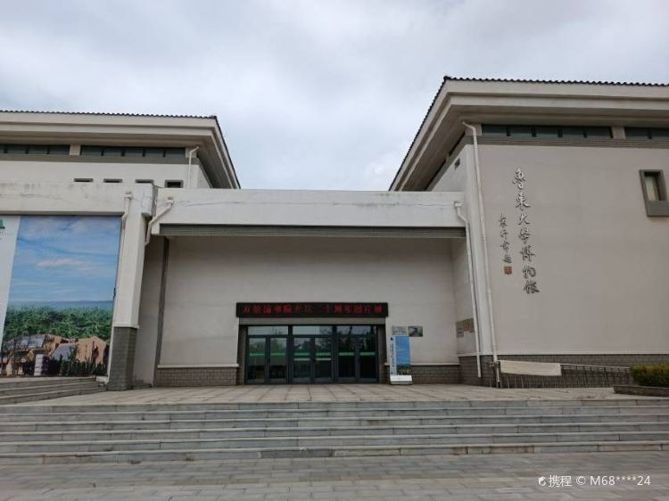
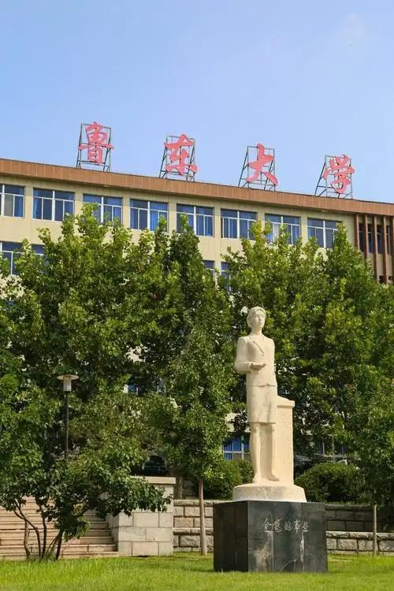

春日的校园，是一幅被春风晕染开的水墨长卷。清晨的薄雾还未完全散去，图书馆前的樱花便已缀满枝头，粉白的花瓣在晨光中泛着温柔的光泽，风一吹，便下起一场浪漫的樱花雨，落在青石板路上，落在学子的肩头，也落在每一个奔赴课堂的青春身影里。沿着樱花大道往前走，人工湖的湖面波光粼粼，岸边的垂柳抽出了嫩黄的新芽，细长的柳条垂在水面上，轻轻拂过涟漪，像是在给湖水梳理着春日的心事。湖里的锦鲤在莲叶间穿梭，偶尔跃出水面，溅起一串晶莹的水珠，惊飞了停在芦苇丛中的白鹭，它展开洁白的羽翼，掠过湖面，飞向远处的湖心岛，留下一道轻盈的弧线。
午后的阳光穿过教学楼的玻璃窗，洒在走廊的长椅上，也洒在操场旁的草地上。草坪上的蒲公英顶着毛茸茸的白伞，在风里轻轻摇晃，等待着下一次的远行；二月兰在墙角肆意绽放，紫色的花海连成一片，像是给校园镶上了一条浪漫的花边。操场边的香樟树抽出了新的枝叶，深绿的老叶与嫩绿的新叶交相辉映，在阳光下投下斑驳的光影，学子们在树下背书、聊天、弹吉他，青春的笑声与鸟鸣声交织在一起，成了春日校园里最动听的旋律。傍晚时分，夕阳把天空染成了橘红色，教学楼的轮廓在余晖中变得温柔，归巢的鸟儿掠过天际，校园里的路灯次第亮起，为晚归的学子照亮前行的路，也为这春日的校园，添上了一笔温暖的底色。

